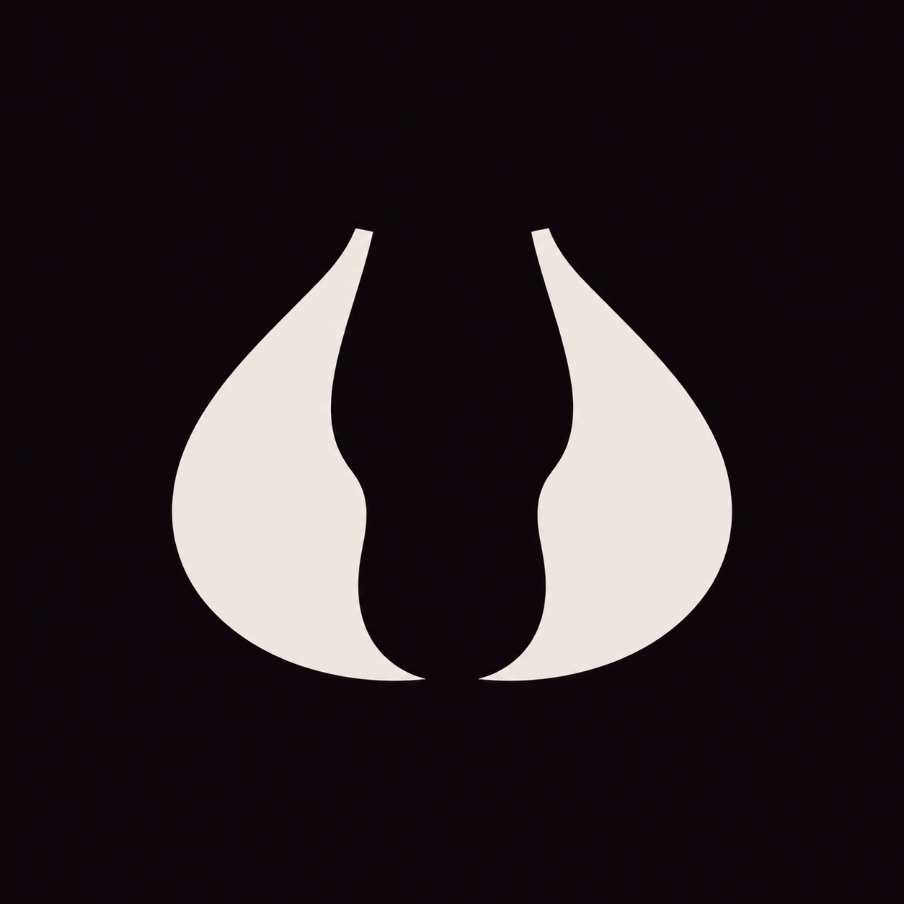
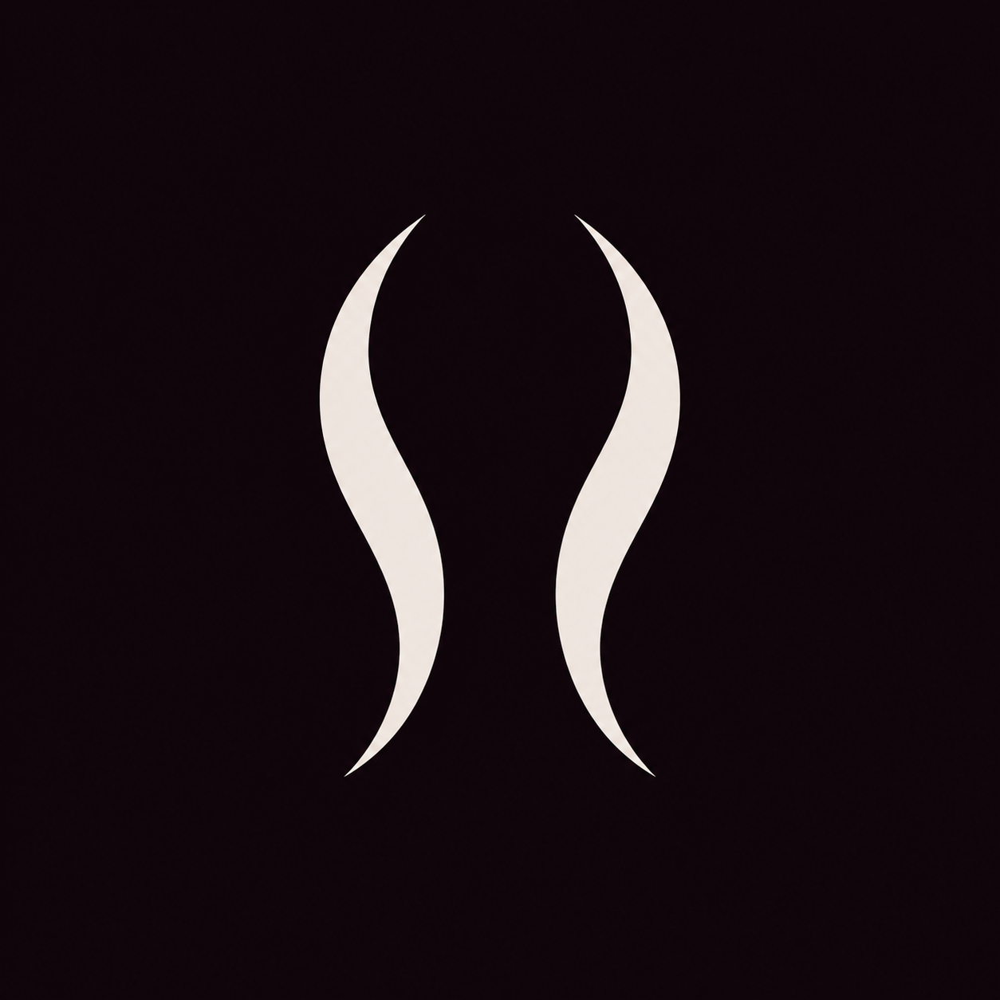
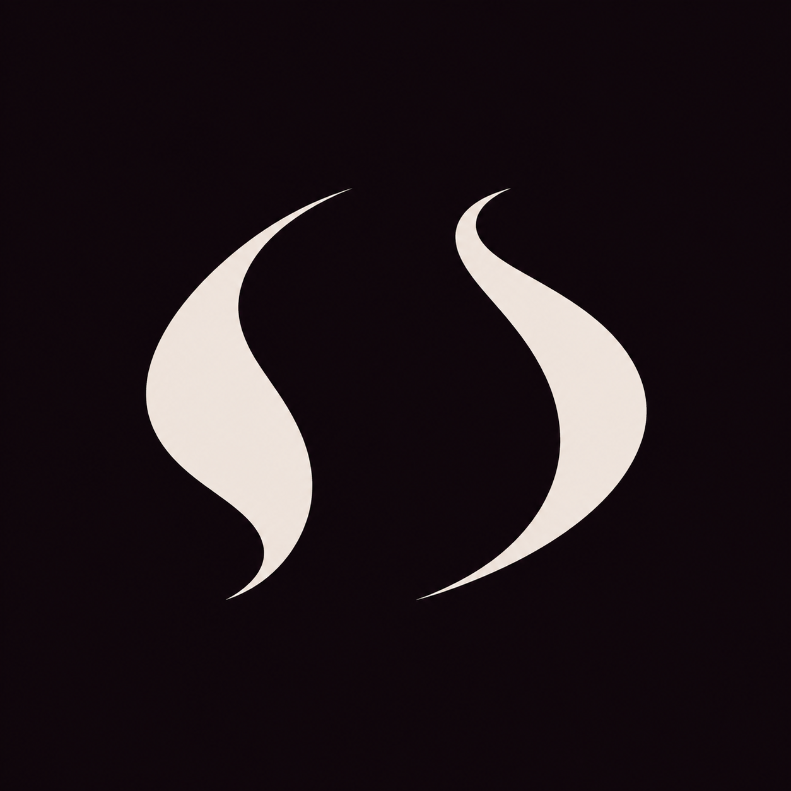

New: handwritten AMOURETTE with two identical people and a heart
A hint, not a portrait.
F, with fewer literal details and more room for interpretation. Three degrees of abstraction, with the original alongside. The lettering, R, and spacing stay untouched.
Loading artwork…
REFERENCE / Previous drawings kept intact
F0 / Original face to face
Before this refinement.
B / The ribbon
Original drawing, unchanged.
C / The first exchange
Original drawing, unchanged.
Three contour studies
The hint
One soft turn replaces the facial details. Full, continuous curves and a clearer central opening. The closest relation to F.
The interval
Two slender, corresponding curves. The space between them takes over; the suggestion of people becomes much less direct.
Two breaths
A freer, asymmetric pair of gestures. Fuller strokes and more movement, with no prescribed facial reading.
What do you see first?
Same lettering. Change the symbol without moving the wordmark.
F1 / The hint
The emblem is a companion, not an obligation. The wordmark can still live on its own.
At a smaller scale
The same contour at actual CSS sizes. A test of what survives reduction, not a finished app icon.
What changed in the drawing
The native vector contours replace the detailed profiles with one soft inward turn. The outer arcs are continuous, the curled upper hooks are removed, and the lower ends remain clearly separate.
This keeps more of F’s visual weight and two-part composition. Still to judge: whether the remaining suggestion is subtle enough, and whether the bodies should be lighter.
{kind=link}
{kind=link}
Source, process & what is still open
Three reference-image edits explored how far F could be simplified. F1 and F2 then received targeted edits. F1’s final comparison shape was redrawn directly in SVG with a small set of controlled curves, rather than tracing its generated source literally. Its study image below is therefore an intermediate, not an exact rendering of the displayed SVG. F2 and F3 use fitted vector contours from their selected images.
Original F, B, and C load their existing assets directly. All compositions preserve the round 9 wordmark exactly. The live SVGs use flat brand colours. These are design studies, not approved identity masters; final optical refinement and minimum sizes remain open. No application files have been changed and no trademark or similarity clearance is implied.
Generation mode: built-in reference-image editing, followed by native vector work on F1. Read the complete prompts and saved-source paths · F1 / Native contour drawing · Previous studies
{kind=link}

{kind=link}

{kind=link}

{kind=link}